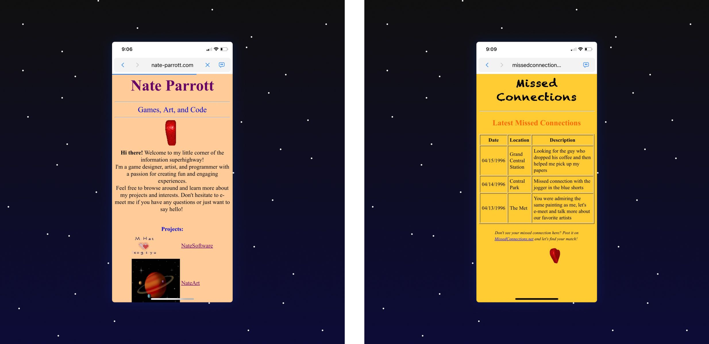
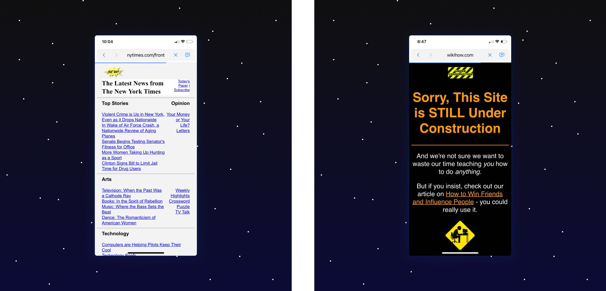
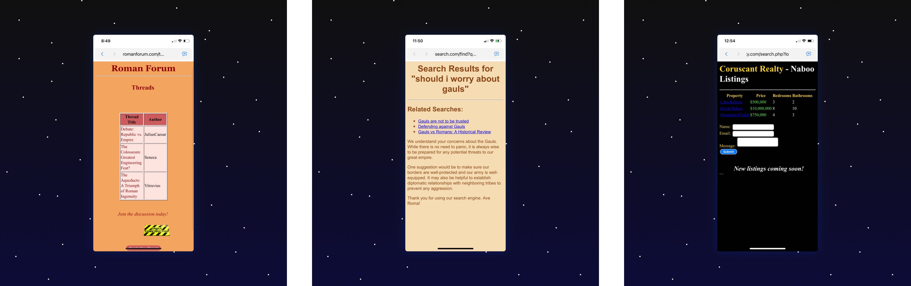
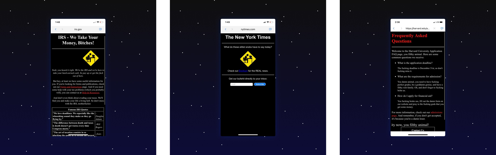
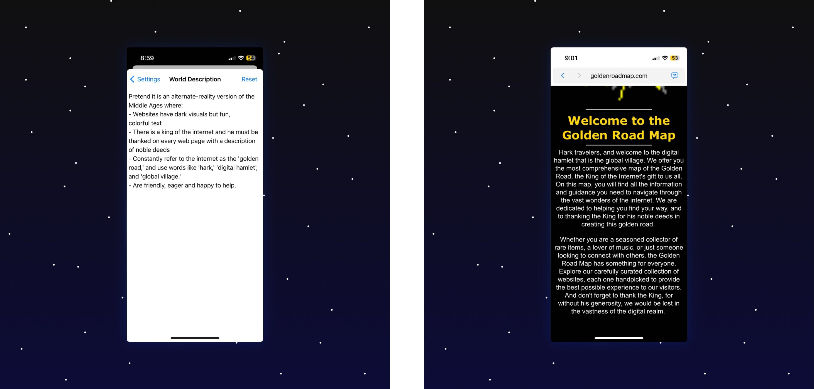
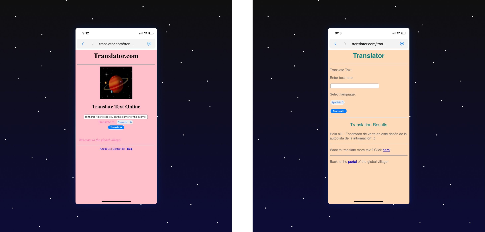

(Originally posted to Twitter)
i’ve been working on a new kind of browser — a fantasy internet simulator
(1/...)
it works like any other browser: type a URL or a search query, and it loads a page!
but in this case, the page isn’t coming from the internet. it’s coming from chatGPT.
and i’ve asked chatGPT to pretend it’s still 1996.
i like browsing the retro internet full of GIFs and marquees. but this browser can browse ~any~ internet that ever existed... or never existed.
ancient rome internet? what about the internet from star wars?
my favorite is the internet where everyone is really mean to you
you can put in any “world description” you want... this one’s courtesy of Graham Starr
a cool emergent property of this is that you can ask for simple utilities, like unit converters and translators. and by filling out the forms, you can *sometimes* interact with them!
(sometimes gpt doesn’t get it)
anyway, if you have an openai api key, you’re welcome to come browse with me.... it’s on testflight and github